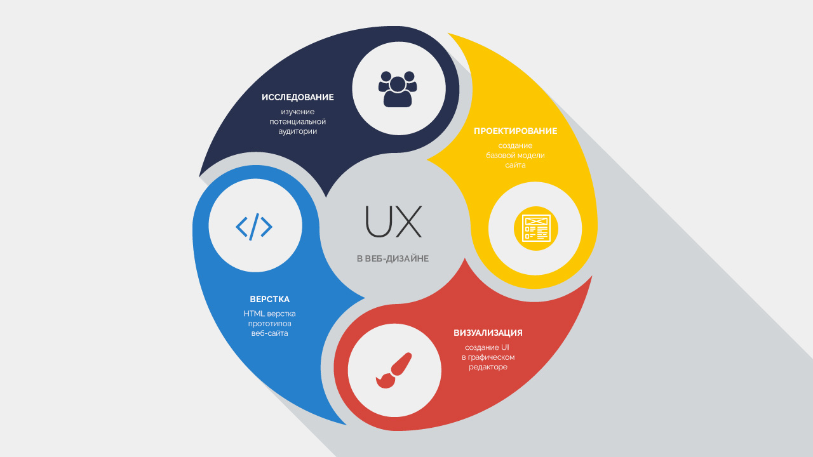

В данном видео вы узнаете, что такое веб-дизайн, что такое UI/UX, Wireframing в современном веб-дизайне, мы рассмотрим базовые правила качественного оформления UI, правильную организацию работы в приложениях для веб-дизайна, рассмотрим, какое значение занимает HTML-верстка в веб-дизайне и как самостоятельно и правильно обучаться веб-дизайну и развиваться, как веб-дизайнер. Другими словами, друзья - это комплексное руководство крутого веб-дизайнера, которое будет крайне полезно не только начинающим, но и опытным веб-дизайнерам, желающим развиваться профессионально.

Часть первая: UX всему голова
Что еще за UX и какая еще голова, с недоумением спросите вы? Начнем с сухих и безжизненных определений, затем разберем все более подробно и на человеческом языке.
UX - дисциплина, изучающая опыт взаимодействия пользователя с продуктом, восприятие и реакцию, возникающую в результате использования.
UX - это понятие, которое применимо не только в веб-дизайне, но и других областях. Давайте копнем поглубже и рассмотрим прмеры из жизни. Опыт взаимодествия - это когда специалист на заводе управлет сложной техникой посредством нажатия пары кнопок, при чем кнопка отключения значительно крупнее; UX - это когда вы срезаете путь до дома тропинкой, хотя есть красивый и чистый тротуар; это когда вы ставите стаканчик с кофе в специальные углубления на панели в салоне вашего авто; это когда педаль тормоза шире педали газа. UX - это когда вы видите ссылки на все используемые материалы урока в описании к моим видео на YouTube и вам не приходится долго искать необходимые файлы. Все это пользовательский опыт взаимодействия. Примеров может быть масса, но суть одна: UX - это способ достижения цели пользователем максимально комфортным способом. И если вы хотите стать крутым веб-дизайнером, да и вообще успешным человеком, вы должны научиться этому.
Давайте для начала посмотрим на картинку. Возможно, это будет для вас шокирующим откровением, но UX - это область, в которую входит как исследование и проектирование, так и визуализация и верстка. В результате работы над UX мы должны получить рабочий прототип. Если речь идео о веб-дизайне, таким прототипом является HTML верстка. Если взять и вытащить из телефона экран, мы можем увидеть кроме самого экранчика провода, подкладки, клеевые швы. Это и есть интерфейс. Хороший дизайнер разрабатывает интерфейс со всеми потрохами, включая верстку. В дальнейшем экран будет подключен к плате телефона (Back-end, PHP, Python, Ruby) или запрограммирован (Front-end, JS). Я понимаю, что кому-то от таких заявлений станет не по себе, особенно старым верстальщикам, для которых верстка - это целый мир, отдельная область знаний. Но давайте смотреть на разработку объективно и называть вещи своими именами. А реальность такова, что мы разрабатываем модель, которая в лучшем случае должна пройти тест, и это - ваша задача, как веб-дизайнера. Далее данная модель (HTML верстка) может быть непосредственно передана в Back-end разработку или, в случае, если это сложный проект, Front-end разработчику для написания JS кода приложения.
Во многих средних и крупных компаниях зачастую UX, UI специалисты и HTML верстальщики - это разные люди. Но эта модель практически не работает на фрилансе. Наиболее эффективен дизайнер, который может реализовать свою идею от начала до конца, а не передавать половину работы другому человеку, теряя золотую нить идеи. Места под солнцем остается все меньше и "просто верстальщик" сейчас, это как водитель, который умеет жать только на тормоз. В верстке нет ничего сложного. Это обычная рутинная работа средней сложности.
UX в вебе - это фундамент, на котором строится дизайн сайта или приложения. Это проектирование интерфейса с учетом потребности людей, для которых вы создаете дизайн веб-сайта. Кто конечный пользователь, какие цели человек преследует, используя ваш интерфейс, как помочь ему максимально быстро и комфортно получить результат? Вот основные задачи, которые решает UX.
Трудность создания опыта взаимодействия состоит в необходимости понять потребности пользователей лучше, чем они понимают их сами.
Джесс Гарретт.
Многие начинающие (и не только начинающие) веб-дизайнеры путают веб-дизайн и визуальный дизайн. Кто-то до сих пор считает, что процесс создания дизайна сайта - это, в первую очередь, создание картинок, кнопочек, иконок (UI), совершенно забывая о фундаменте (UX), о исследовании людей, для которых все это хозяйство рисуется.
Мне неоднократно приходилось наблюдать, как не очень красивые визуально сайты и LP принсили огромные продажи и работали лучше любого заморского Flat интерфейса со стильными иконками и инфографикой. Да да, это были сайты с нелепыми градиентами, огромными кнопками, необработанными фото без ретуши и спрессованными текстовыми блоками. Но они работали. Чудо, скажите вы? Не думаю. Просто дизайнер, который рисовал такой сайт, провел исследование аудитории клиента, просто дизайнер умеет слушать и понимать реальные потребности пользователей продукта, хоть и не обладает особым визуальным вкусом. Или случайно угадал верное направление. Если вы хотите стать по-настоящему крутым веб дизайнером, вы должны иметь 2 блестящие, отполированные стороны одной медали - с одной стороны, вы должны стать хорошим UX специалистом, с другой, вы должны развивать чувство вкуса, чтобы ваши интерфейсы были не только функциональны, но еще и привлекательны - это UI. Если говорить о том, какой дизайнер лучше - тот, кто рисует с учетом пользовательского опыта, но не красиво или тот, кто рисует изумительные аккуратне интерфейсы, но абсолютно не вникает в проблемы человека, то, однозначно, первый выигрывает. И это понятно, ведь больше денег и клиентов принесет бизнесу именно первый, если говорить простым языком.
Мое скромное мнение: дизайн перестанет существовать ради визуального дизайна, Web 3.0 - это эпоха UX, повышения информативности и удобства.
Задачи UX
Постепенно переходим от теории к практике. Какие же задачи позволяет решить UX?
Главная задача дизайнера - максимально повысить уровень удовлетворенности конечного пользователя от взаимодействия с продуктом. Здесь и далее под продуктом мы будем понимать любой объект взаимодействия с пользователем, будь то реальный продукт, услуга, веб-приложение или веб-сайт.
Веб-дизайнер - это тот, кто прокладывает мост между владельцем бизнеса и потенциальным клиентом. Думаю, не нужно иметь семь пядей во лбу, чтобы понять, что основная работа по исследованию при проектировании UX - это изучение потенциальной аудитории продукта. Самое сложное здесь - это то, что нельзя пощупать, нельзя измерить - это эмпатия веб-дизайнера или UX специалиста, способность понять желания и чувства других людей. Веб-дизйнер должен быть достаточно опытен по жизни, чтобы с наиболее высокой долей вероятности определить желания и чувства потенциальной аудитории. Это довольно сложный субъективный процесс, но его можно привести в порядок и поднять свои скиллы в UX, благодаря отработанным методикам исследования и проектирования.
Часть вторая: Исследование
Вы не можете просто взять продукт клиента и сделать на коленке под него веб-сайт, приложение или лендинг. В корне не правильно брать чужой лендинг, чужие наработки, но еще хуже - высасывать идею из пальца и рисовать под нее какой-то эфемерный дизайн, вставляя по ходу дела ключевые слова в блоки текста по продукту. Большинство поступают именно так, хоть это в корне не правильно. Это тупик, путь в никуда, несмотря на то, что менее просвещенные в веб-дизайне клиенты списывают нелепые и неудачные решения плохого специалиста, который таки получает свои кровные, на случай.
Вы должны четко понимать, ПОЧЕМУ вы создаете именно такую секцию, именно такие элементы, именно такой порядок на Web странице. Все ваши действия должны быть подкреплены железобетонным основанием. Довольно странно будет звучать объяснение на вопрос "Почему здесь эти круглешочки?" в виде - "Потому, что я где-то увидел такие и решил данную форму применить под ваш выдуманный контент, так как у меня не работает фантазия". Странно, не правда ли?
Right Way - исследование. Исследование - это самый первый шаг дизайнера при работе над любым проектом. Нужно четко вывести группу пользователей, максимально узнать аудиторию, под которую вы разрабатываете интерфейс, узнать потребности этой аудитории. Конечно, основываясь только на своем личном опыте и своих ощущениях довольно сложно прийти к объективно правильному решению в интерфейсе, ведь вы не беспристрастны по отношению к результату вашего творчества и ваш личный опыт относительно конкретного продукта может быть весьма ограниченным. Тем не менее, если вы хорошо изучили продукт, для которого делаете дизайн сайта, то можете сделать какие-то выводы, принять решения. Самый минимум, который вы просто обязаны сделать, если вы фрилансер, работаете один и у вас нет своей команды UX специалистов - изучить текущий опыт бизнеса, накидать портрет среднего потребителя продукта. Например, если вы создаете посадочную страницу для продажи сельскохозяйственной техники, скорее всего, потенциальные клиенты не ищут особых изысков в визуальном исполнении сайта, их более интересуют каталог продукции, фотографии, сроки и способы дставки именно в их регион, цены и возможные скидки. Последний пункт говорит о том, что проектирование UX очень тесно связано с бизнесом. Это то, о чем обычно не говорят веб-дизайнеры, но думают все.
В начале своего исследования нужно пообщаться с владельцем бизнеса, вашим заказчиком. Он является специалистом в своем продукте и у него есть опыт работы с клиентами, он знает свою аудиторию. Записывайте все ключевые моменты на стикеры или в блокнот для дальнейшего анализа. Если вы фрилансер - изучите опыт аналогичных продуктов, тематические форумы и сообщества, но не применяйте слепо наработки конкурентов в своем проекте - это не правильно и не эффективно. Если вы - студия, у вас есть ресурсы и бюджет проекта достаточный для глубокого исследования - проводите онлайн-опросы, интервью с аудиторией, A/B-тестирования нескольких потенциально эффективных прототипов.
Двигаемся дальше. Создайте список характерных качеств посетителей, интересующих вас в первую очередь. Для этого сделайте таблицу персон, которые потенциально могут являться пользователями продукта и охарактеризуйте их. Постаьте себя на место персоны, вживитесь в роль и начните думать, как персона:
| Наименование персоны | Что ценят в первую очередь? | Каковы цели посетителей? |
|---|---|---|
| Трактористка Глаша |
|
|
| Персона #2 | ..... | ..... |
| Персона #3 | ..... | ..... |
Обратите внимание, что правильно охарактеризовав 1-2-3 персоны, вы имеете больше шансов попасть в цель, применительно к огромному количеству людей со схожими ценностями и потребностями в данной тематике. Определив 2-3 (или более) персоны, можно определить задачи, которые посетители смогут решить с помощью вашего интерфейса.
Часть третья: Wireframing, каркасное моделирование
После того, как вы определили аудиторию, определили цели и ценности персон, можно приступить к моделированию каркаса интерфейса, так называемому Вайрфреймингу. Wireframe служит для распределения информации на будущих страницах по степени важности - сверху вниз. В процессе моделирования, вы продумываете, какая информация будет на странице, определяете базовую форму вывода информации, но не вдаетесь в детали, не занимаетесь визуализацией. Увлекаться не стоит, так как если в дальнейшем вы поймете, что структура не совсем удачная, вам все равно придется все переделывать заново. Забудьте о стилизации и акцентируйте внимание на структуре.
Для создания каркаса можно воспользоваться специальным приложением или нарисовать от руки на бумаге в клеточку или в точечку, после чего отсканировать и положить в папку с материалами проекта. Я обычно использую онлайн приложение wireframe.cc, так как можно в реальном времени вносить правки и согласовывать с клиентом. Но иногда и прорабатываю структуру страниц на бумаге, если лень садиться за комп.
Совет: не останавливайтесь на одном Wireframe для главной страницы сайта или главного экрана приложения, сделайте несколько набросков расположения структуры. Для главной страницы берите информацию из таблицы персон, отсорируйте цели и ценности по степени важности и эксперементируйте с формой, в которой вы будте представлять информацию посетителям.
Проработайте все страницы веб-сайта или приложения и только после того, как каркас всего сайта готов, переходите к следующему шагу.
Часть четвертая: UI, визуализация
После того, как вы основательно проработали UX, создали несколько каркасов и выбрали наиболее привлекательные варианты, можно приступать к визуализации. Визуализация - это прорисовка каркасов, создание единого стиля, оформление контента. Другими словами, мы начинаем работать над UI. Чаще всего для визуализации используется Adobe Photoshop, Sketch.app, Inkscape+Gimp или другие инструменты. Я советую использовать Adobe XD для визуализации и проработки интерактивного графического прототипа. В дальнейшем в наших уроках мы будем использовать только этот инструмент для создания дизайна, так как здесь можно сразу сделать визуализацию и показать, как будет происходить движение пользователей по страницам. Для работы с векторной графикой я использую Inkscape - здесь я создаю иконки и другую необходимую графику, для работы с растровой графикой - лучшее решение, это Adobe Photoshop.
Правила хорошего тона
Разрабатывая дизайн сайта, веб-дизайнер придерживается определенных негласных правил при оформлении. Межстрочный интервал, оступы, шрифты, размеры элементов - это все поддается измерению и есть откровенно плохие реализации. Поэтому можно составить свод правил, придерживаясь которых вы уж точно не сделаете плохую визуализацию вашего дизайна, даже если вы новичок и ваше чувство вкуса находится в зачаточном состоянии.
Обратите внимание, что эти правила можно нарушать в том случае, если у вас большой опыт в дизайне и вы знаете, что делаете. Также вы можете нарушать данные правила, если вы новичок и экспериментируете. Если вы начинающий веб-дизайнер, постарайтесь не выпускать в продакшен интерфейсы, нарушающие какое-либо из приведенных правил.
-
Типографика, текст, ссылки
- Не используйте слишком большие заголовки;
- Не используйте шрифт меньше 12px;
- Не делайте слишком маленький или слишком большой межстрочный интервал;
- Не растягивайте буквы инструментом "Transform", шрифт должен быть естественно пропорциональным;
- Не используйте больше 3 шрифтов на странице;
- Не используйте слишком маленький контраст, не печайтайте светло-серым по белому или темно-серым по черному;
- Используйте интервал между символами с осторожностью если знаете, что делаете и выбранный шрифт позволяет сделать текст "воздушным" наиболее элегантно;
- Не делайте слишком маленьких отступов между абзацами, заголовками и элементами, дайте воздуха дизайну;
- Не используйте капс без необходимости;
- Не используйте для основных текстовых блоков слишком сложный декоративный шрифт, это должен быть простой и легкочитаемый шрифт какого-либо семейства Sans или Serif (Serif и Slab - если вы знаете, что делаете);
- Все ссылки, за исключением пунктов навигации, должны быть подчеркнуты. Старайтесь также оформлять ссылки, которые уже были посещены, более темным цветом, в отличие от дефолтного цвета ссылок;
- Если иерархия сайта содержит более 3-х уровней, не забывайте о хлебных крошках.
-
Графика, иконки, фотографии
- Не используйте в дизайне шаблонные фотографии. Лучше сделать самостоятельно, порекомендовать заказчику обратиться к фотографу или найти наиболее "жизненные" фотографии;
- Не используйте иконки, сделанные из фотографий;
- Все иконки должны быть выполнены в едином стиле;
- Не увеличивайте фотографию больше ее оригинального размера;
- Не масштабируйте графику непропорционально;
- Не применяйте режимы наложения слоев, отличные от обычного (Normal);
- Старайтесь не применять фильтры на изображения, которые должны иметь несколько состояний (обычно и при наведении, например). Все наложения, изменения - только посредством наложения нового слоя. Все должно быть легко воспроизведено в HTML верстке. К ретуши и подготовке фото это не относится;
- Не масштабируйте фотографию до конвертации в смарт объект;
- Обрезайте фотографию только посредством обтравочной маски для фигуры, оригинал фотографии, как и в предыдущем пункте, должен быть сохранен в смарт объект;
- Если вы рисуете иконки в Photoshop, не растрируйте их в уменьшенном размере. Не забывайте, что макету еще предстоит этап верстки и все иконки необходимо будет векторизовать. Оригинальные смарт объекты с иконками должны быть достаточно крупными для качественной трассировки;
- В идеале, у вас должны быть все плоские иконки и графика в формате SVG, в отдельной папке. Если вы ленивый дизайнер - предусмотрите возможнсть качественной конвертации или экспорта иконок в SVG;
-
Цвет
- Не используйте чистые цвета, обязательно старайтесь добиться наиболее приятного оттенка;
- Не используйте более 2-х акцентных цветов на странице и не более двух темно-серых (или черного) цветов для текста. В идеале - только 1 акцентный цвет и 1 темно-серый/черный для текста. Я использую цвета 111111 - 222222 для основного шрифта на светлом фоне;
- Старайтесь закрашивать акцентным цветом только те элементы, которые наиболее важны на странице, акцентируйте на них внимание. Это кнопки, стрелочки, галочки важных пунктов, текстовые ссылки, информативные иконки (мелкие иконки типа "логин", "пароль", "почта" и иконки в формах акцентировать не обязательно);
-
Правила работы в графическом редакторе, организация работы и прочее
- Называйте слои со смыслом;
- Старайтесь упорядочивать смысловые блоки и составные элементы интерфейса в группы;
- Всегда создавайте отдельную папку со всеми используемыми шрифтами в формате TTF или OTF. Иконочные шрифты также должны быть размещены в этой папке;
- Создавайте макеты 1 в 1 (72 пикс. на дюйм). При 100% отображении макеты должны быть в таком же масштабе, в котором предполагается результат HTML верстки;
- Обязательно используйте в работе какую-либо систему сеток. Можно разработать самому, но я рекомендую использовать систему сеток Bootstrap. Ширину контента можно кастомиировать от оригинальной ширины Bootstrap сетки, для этого можно использовать плагины для создания сеток в случае, если вы пользователь Photoshop;
- Не создавайте декоративные элементы, если в этом нет практического смысла. Если это имиджевый сайт и нужна красивая картинка, данное правило можно опустить;
- Придерживайтесь смысловой визуальной иерархии. Почитать про визуальную иерархию;
- Используйте правило "внутреннего и внешнего", которое гласит, что расстояния между внутренними элементами блоков должны быть меньше, чем внешнее расстояние между блоками;
- Не забывайте, что люди чаще всего приходят не на главную страницу сайта, а на внутренние, поэтому продумайте информативные универсальные блоки - шапку, подвал, сайдбары (если есть). Шапка должна быть максимально информативной, но не перенасыщенной. Обязательные элементы: Лого, название проекта, навигация. Поиск по сайту и другие элементы размещаются в зависимости от проекта.
- Хорошее решение - размещение в футере развернутой навигации или карты сайта со всеми потаенными местами. Футер или подвал - это вообще отдельная тема, достойная отдельной статьи. Постарайтесь продумать подвал до мелочей, старайтесь не делать скудных узких подвалов с логотипом и номером телефона. Здесь опять-же, завист от проекта, но чаще всего футер лучше делать высоким и развернутым. Я очень часто нахожу нужную потаенную информацию именно в подвале и мне нравятся высокие и продуманные подвалы. Не думал, что скажу такое о подвалах.
Мы рассмотрели основные утверждения, кторые можно назвать правилами. Давайте теперь рассмотрим самые распространенные мифы веб-дизайна, которые были для кого-то правилами и даже руководством к действию, но сейчас уже не используются профессионалами.
Мифы веб-дизайна
- Правило трех кликов. Миф. Если пользователь заинтересовался информацией на главной странице, он сделает сколько угодно кликов для того, чтобы добиться цели. Нам просто нужно ему в этом немного помочь - правильно разместить указатели в навигации на нужный материал. Навигация должна быть простой и понятной;
- Слайдер контента - это хорошее решение. Весьма спорное утверждение. Я очень часто использовал в качестве формы для вывода контента слайдеры, но есть исследования, подтверждающие, что их мало кто листает и что-то мне подсказывает, что это действительно так. Возможно, в ближайшем будущем эффективность слайдеров контента станет мифом;
- Чтобы сделать качественный дизайн, нужно много работать. Миф. Правильно определив аудиторию, достаточно одной удачной картинки, заголовка и блока текста, чтобы пользователь искренне заинтересовался продуктом. Встречаются ситуации, когда веб-дизайнер вынужден пичкать что попало в интерфейс (куча секций с CTA, таймеры обратного отсчета, заезженные призывы к действию) по требованию заказчика с обвинениями в том, что дизайнер мало поработал. Это смешно и нелепо. К сожалению, это повсеместная особенность владельцев бизнеса и нужно просто уметь грамотно объяснять, что в веб дизайне правило "чем больше, тем лучше" не работает;
- Дизайн должен быть оригинальным. Это, конечно, хорошо, если у вас есть месяц в запасе, а у клиента толстый кошелек. Но зачастую все не так. Можно потратить бешеные деньги и время на уникальные иллюстрации, оформление, но прийти к тому-же результату, как если бы таких возможностей не было. Проработайте UX и для отличного результата подобные траты времени и денег будут излишни. Зачастую, пользователи, привыкшие к определенному расположению универсальных блоков (шапка с навигацией, подвал) сбиваются с толку, посещая сайты, где все «оригинально и необычно». Придерживайтесь стандартов в вебе и вам не придется изобретать велосипец. Кроме того, у стартапов зачастую нет ни времени ни средств для экспериментов. Я считаю, что можно сделать лаконичный дизайн с изюмикой, который будет действительно работать и приносить клиентов, не прибегая к визуальным изыскам.
Часть пятая: Верстка
Я считаю, что веб-дизайнер должен уметь верстать. Хотя наверняка найдется много ленивых коллег, которые со мной не согласятся. Обратите внимание, мой канал называется WebDesign Master и даже когда я начинал записывать уроки, довольно четко представлял, что такое веб-дизайн и что в него входит. Конечно, что-то поменялось, что-то осталось неизменным, но я все больше и больше убеждаюсь в том, что такое мировозрение весьма объективно.
Я не силен во Front-end, ведь настоящий Front-end - это глубокий JavaScript, разработка сложной логики интерфейсов для крупных и серьезных проектов. У меня другой склад ума - не программиста, а дизайнера, поэтому принуждать себя к области, которая не нравится смысла не вижу. Но я всегда смогу "оживить" свой дизайн и сделать рабочий HTML прототип на достаточно высоком уровне, если потребуется. И это довольно шикарная опция для веб-дизайнера, ведь ваш ценник, как специалиста, поднимается, как минимум, вдвое. Не стоит бояться осваивать новые горизонты. Верстка - это не сложно.
Если вы хотите освоить верстку и базовые навыки Front-end разработчика, советую:
- Изучить теорию. Советую для этого освоить сайт htmlbook.ru. От начала и до конца, все HTML теги, все CSS свойства
- Закрепить знания на практике. Для этого подойдут следующие мои материалы:
- Создание Landing Page на WordPress, части: 1, 2, 3, 4, 5, 6, 7, 8, 9
- Создание HTML тем на Bootstrap
- Джедай верстки #4. Bootstrap: Погружение в адаптивную HTML верстку на примере коммерческого сайта
- Создание сайта под ключ на заказ, уроки 11, 12,13, 14, 15, 16, 17, 18, 19, 20, 21, 22,23, 24, 25
- Адаптивная верстка Landing Page. Джедай верстки #5
- Адаптивная HTML верстка сайта салона красоты
- Создание крутого Swiper-слайдера от А до Я
Материала по HTML верстке более, чем достаточно, поэтому с версткой все.
Часть шестая: Самообучение и саморазвитие
Веб-дизайн и веб-разработка в целом - это области, в которых, как ни в каких других важнейшее значение занимает самообразование. Ведь у нас нет школ, колледжей и институтов на государственном уровне, которые обучали бы профессионалов в области веб-дизайна, а сама индустрия не стоит на месте и всегда нужно быть на волне.
Что касается UX - тут все тихо и спокойно. И так будет еще долго, ведь по сути, UX - это дисциплина, изучающая психологию, а здесь врядли что-то может поменяться в ближайшее время. Здесь самообучение заключается в развитии внутреннего мира, собственного опыта. Изучив базу, можно смело работать много лет, лишь изредка мониторя новости в этой области и читать хорошие детективы. Но особого внимание требует самообучение UI, здесь кипит жизнь, тренды в визуальном дизайне сменяют друг друга, дополняются и эволюционируют чуть ли каждый день! Я не сторонник слепого следования тенденциям и трендам, но, как показывает практика, рациональное зерно в трендах есть и за ними нужно следить.
Что касается совершенствования своих навыков в UI, тут нельзя дать каких-то четких указаний, посоветовать книгу, после которой у вас будут получаться красивые интерфейсы. Но, тем не менее, я могу дать несколько советов, исходя из своего опыта, как происходит самообучение у меня.
- Постоянно изучайте работы на ThemeForest - это кладезь современного веб-дизайна. Пытайтесь применить какие-то привлекательные формы отображения контента в ваших работах, но не увлекайтесь и не забывайте о базе - UX, все должно быть в тему;
- Будьте постоянным посетителем awwwards.com и смотрите крутые работы, чтобы не расслабляться
- Ищите хорошие примеры дизайна на pinterest.com
- Также, для развития чувства вкуса будет полезно периодически изучать хоршие работы на behance.net. Выделяйте время для того, чтобы практиковаться - повторяйте понравившиеся работы на практике в графическом редакторе, но ни в коем случае не публикуйте свои копии где бы то ни было. Это нужно только для практики и саморазвития;
- Критикуйте рекламу на улицах вашего города и думайте, как можно сделать лучше;
- Критикуйте UX на улицах и также, думайте, как многие вещи можно было бы сдлать удобнее. Благо, у нас на постсоветском пространстве есть место, где разгуляться на этот счет. Думайте о людях, думайте как люди.